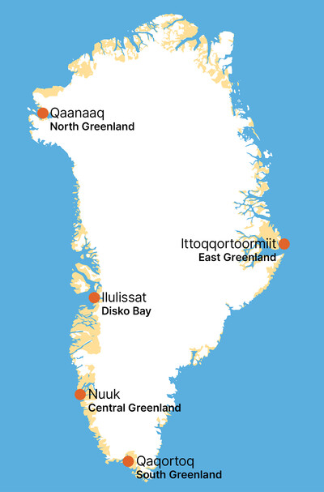

Briefing: 2026 New Year Update Briefing: Nytårsopdatering 2026 Ilisimatitsissut: 2026 Ukiortaami Nutarterineq
In 2026, it is expected that Greenland will have finalized a comprehensive modernization of its primary hubs, readying the nation for the projected surge in Arctic shipping and international travel routes. I 2026 forventes Grønland at afslutte en omfattende modernisering af sine primære knudepunkter og gjort nationen klar til den forventede stigning i arktisk skibsfart og internationale rejseruter. 2026-mi aallarnerfigalugu nunatta angallannikkut qitiusoqarfiit pingaarnersaat nutarterneqarnerat naammassinissaat aallaavigineqarput, tamatumalu nuna umiarsuit nunat immallu issittut avannarlikkoorlutik angalasut timmisartullu aqqutaasa annertusinissaannut piareernerulersimassapput.
This status update confirms that the nation's key commercial and logistical centers—Ilulissat in the north, Nuuk in the central region, and Qaqortoq in the south—have completed the technical upgrades necessary to support a high-volume maritime and aviation economy. This development marks the definitive transition away from the inland Kangerlussuaq hub toward direct coastal access at Greenland's major population centers. Denne statusopdatering bekræfter, at nationens vigtigste kommercielle og logistiske centre – Ilulissat i nord, Nuuk i hovedstadsregionen og Qaqortoq i syd – har færdiggjort de tekniske opgraderinger, der er nødvendige for at understøtte en maritim og luftfartsøkonomi med høj volumen. Denne udvikling markerer den definitive overgang væk fra det indlandske knudepunkt i Kangerlussuaq mod direkte kystadgang ved Grønlands større befolkningscentre. Killiffik una uppernarsaavoq nuna tamakkerlugu niuernikkut logistikkikkullu qitiusoqarfiit – Avannaani Ilulissat, Qeqqani Nuuk, Kujataanilu Qaqortoq – teknikkikkut pisariaqartitat naammassineqarsimasut. Tamanna Kangerlussuup qitiusoqarfiuneranit nunaqarfiit annersaannut toqqaannartumik tikinneqarsinnaanngornerannut ikaarsaariarneruvoq.
Strategic Hub Status: January 2026 Status for Strategiske Knudepunkter: Januar 2026 Periusissatigut Qitiusoqarfiit Killiffigisaat: Januaari 2026

Hover over a strategic hub to view its current readiness status for 2026.
Hold musen over et strategisk knudepunkt for at se beredskabsstatus for 2026.
Qitiusoqarfik tooruk 2026-mi piareersimassusia takuniarlugu.
Aviation Hub Modernization Modernisering af Luftfartsknudepunkter Mittarfeqarfiit Nutarterneqarnerat
The shift to direct coastal entry is now a logistical reality. Nuuk International (GOH), the central artery for government and commerce, is fully operational for wide-body aircraft with a new Terminal Control Area (TMA) active as of this month. In the north, Ilulissat International (JAV) is undergoing final commissioning for its October 2026 opening, providing a direct gateway for Disko Bay. In the south, the Qaqortoq Regional airport is finalized and slated for its official opening on April 16, 2026, establishing the first fixed-wing connection for the region. Skiftet til direkte kystadgang er nu en logistisk realitet. Nuuk International (GOH), den centrale hovedpulsåre for regering og handel, er fuldt operationel for wide-body fly med et nyt Terminal Control Area (TMA), der er aktivt fra denne måned. I nord gennemgår Ilulissat International (JAV) den sidste idriftsættelse inden åbningen i oktober 2026, hvilket giver en direkte port til Disko-bugten. I syd er Qaqortoq Regional lufthavn færdiggjort og planlagt til officiel åbning den 16. april 2026, hvilket etablerer den første forbindelse med fastvingede fly for regionen. Sinerissap toqqaannartumik tikinneqarsinnaanngornera maanna piviusunngorpoq. Nuuk International (GOH), naalakkersuinikkut niuernikkullu qitiusoq, maanna timmisartorsuarnit tikinneqarsinnaanngorpoq, qaammammi uani Terminal Control Area (TMA) nutaaq atuutilerluni. Avannaani Ilulissat International (JAV) oktobarimi 2026-mi ammanissaanut piareersarneqarpoq, Qeqertarsuup Tunuani toqqaannartumik tikinneqarsinnaanngorluni. Kujataani Qaqortup Mittarfia naammassineqareerpoq, apriilillu 16-anni 2026-mi pisortatigoortumik ammarneqassalluni, taamaalilluni timmisartunut suluusalinnut aqqutissiuussilluni.
Maritime Readiness and Environmental Security Maritimt Beredskab og Miljøsikkerhed Imarsiornikkut Piareersimassuseq Avatangiisinillu Isumannaallisaaneq
Greenland’s primary ports have been integrated into a new "Blue Economy" framework to manage increased traffic from the Northern Sea Route. Nuuk’s port expansion now features advanced environmental monitoring to track water quality and emissions, ensuring that the surge in maritime commerce complies with the national 2026 sustainability mandates. Grønlands primære havne er blevet integreret i en ny "Blå Økonomi"-ramme for at håndtere øget trafik fra den Nordlige Søvej. Nuuks havneudvidelse omfatter nu avanceret miljøovervågning til at spore vandkvalitet og emissioner, hvilket sikrer, at stigningen i maritim handel overholder de nationale bæredygtighedsmandater for 2026. Kalaallit Nunaata umiarsualiviisa pingaarnersaat "Aningaasaqarneq Tungujortoq" (Blue Economy) aqqutigalugu aaqqissuunneqarput, Umiarsuit Aqqutaannit avannarlerneersut aqunniarlugit. Nuummi umiarsualiviup allineqarnerani maanna immap pitsaassusianik gassinillu aniatitsinermik uuttortaatit atulernikuuai, umiarsuit angallannerulernissaat 2026-mi piujuartitsinermut piumasaqaatinut naapertuuttuunissaat qulakkeerniarlugu.
The southern hub of Qaqortoq is specifically positioned to support the Critical Metals Pilot Plant, operational in May 2026, ensuring that Greenland can process and export resources directly through ice-free lanes. To support this nationwide increase in activity, primary Search and Rescue (SAR) assets and the Air Greenland H225 fleet have been centralized in Nuuk, providing a 90-minute rapid response capability across the high-traffic Davis Strait. Det sydlige knudepunkt i Qaqortoq er specifikt positioneret til at støtte Pilotanlægget for Kritiske Metaller, der bliver operationelt i maj 2026, hvilket sikrer, at Grønland kan forarbejde og eksportere ressourcer direkte gennem isfrie baner. For at støtte denne landsdækkende stigning i aktivitet er primære Search and Rescue (SAR) aktiver og Air Greenlands H225-flåde blevet centraliseret i Nuuk, hvilket giver en 90-minutters hurtig responskapacitet på tværs af det trafikerede Davis Stræde. Kujataani Qaqortoq Aatsitassanut Qaqutigoortunut Misileraavimmut, maajimi 2026-mi atulertussamut, qitiussaaq, taamaalilluni isumalluutit suliarineqarlutillu sikueqqaartukkut annissat toqqaannartumik aqqutissiuunneqassallutik. Nuna tamakkerlugu suliaqarnerulernissaq tapersersorniarlugu, annaassiniarnermut (SAR) atortut Air Greenlandillu H225-flåde-a Nuummut katersuunneqarput, Davis Strædemi angallaffioqisumi 90 minutsit iluanni qisuariarsinnaanngorlutik.
Diplomatic and Regulatory Oversight Diplomatisk og Lovgivningsmæssigt Tilsyn Diplomatiikkut Inatsisitigullu Nakkutilliineq
With the opening of new shipping routes comes a heightened need for sovereign oversight. The January 2026 status confirms that the diplomatic presence in Nuuk has expanded, with Canada and France joining the United States in establishing consulates to tighten relations with Greenland and manage future circumpolar trade. This presence facilitates the coordination of stricter environmental regulations, including the enforcement of the Heavy Fuel Oil (HFO) ban for all vessels operating within Greenlandic territorial waters. Med åbningen af nye skibsruter følger et øget behov for suverænitets-tilsyn. Statusopdateringen fra januar 2026 bekræfter, at den diplomatiske tilstedeværelse i Nuuk er udvidet, hvor Canada og Frankrig har sluttet sig til USA i etableringen af konsulater for at styrke relationerne til Grønland og håndtere fremtidig cirkumpolar handel. Denne tilstedeværelse faciliterer koordineringen af strengere miljøreguleringer, herunder håndhævelsen af forbuddet mod tungolie (HFO) for alle fartøjer, der opererer i grønlandsk territorialfarvand. Umiarsuit aqqutaasa nutaat ammarneqarnerisigut oqartussaaffiup nakkutigineqarnissaa pisariaqalerpoq. Januaari 2026-mi killiffiup uppernarsarpaa Nuummi diplomatiikkut najuunneq annertusisoq, Canada aamma Frankrig USA-mut ilanngullutik konsulatinik pilersitsimmata, tamatumalu Kalaallit Nunaannut attaveqarneq nukittorsarlugulu siunissami issittumi niuerneq aqutarissavaat. Tamanna avatangiisitigut malittarisassat sukannernerusut ataqatigiissaarneqarnissaannut iluaqutaassaaq, ilaatigut Heavy Fuel Oil-imik (HFO) atuinerup inerteqqutaalerneranut, umiarsuarnut Kalaallit Nunaata imartaani angalasunut tamanut atuuttumik.